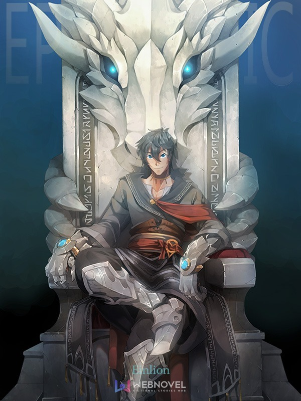

Endless Path : Infinite Cosmos
Synopsis
Vahn was an atypical youth. Due to a rare mutation, his blood had the potential to target and attack ailments within the human body. Touted as a universal cure, people had elevated his status above the norm and given him the classification "Panacea". In the media, he was hailed as a great hero who would usher in a new era or human wellness. However, behind the scenes things weren't so bright. Being a unique individual, Vahn spent his entire youth locked up in a lab with various scientists and research teams using his body and blood to perform endless amounts of experiments. The only solace in his suffering was the various anime and manga made available to him between experiments. He often imagined himself as the protagonist in a world of his own, finally in control of his own destiny. For years he nurtured this desire, until at the age of 14 he died when an organization had tried to kidnap him from the lab...
"Finally, I don't have to suffer anymore..."
This was Vahn's last thought as he faded into the endless black abyss...
"You poor soul."
Cover by Sinlaire, Edited by Frozen: https://www.deviantart.com/sinlaire
https://discord.gg/Jwa8PKh
New Patreon~! https://www.patreon.com/user?u=14397149
This is a work of fiction that draws heavily upon the original source material of Danmachi. Please support the official release and know I claim no ownership or credit regarding the existence of pre-existing characters or content.
Table of contents
- Chapter 1: The Beginning of the End. Part 1/2
- Chapter 2: The Beginning of the End. Part 2/2
- Chapter 3: Meeting the Goddess Klyscha
- Chapter 4: Karma
- Chapter 5: The Path
- Chapter 6: Within the Western Forests (1/2)
- Chapter 7: Within the Western Forests (2/2)
- Chapter 8: First Blood : New Home
- Chapter 9: Training Begins
- Chapter 10: Hunting : Second Blood
- Chapter 11: The Result of Six Months : Quest
- Chapter 12: Preparation : A New Bow
- Chapter 13: The Hunt Begins
- Chapter 14: Difficulties
- Chapter 15: *Spoiler : Title at End*
- Chapter 16: Rewards
- Chapter 17: Entering the City
- Chapter 18: The Guild
- Chapter 19: The Hearths Embrace
- Chapter 20: The Hostess of Fertility
- Chapter 21: Into the Dungeon : Desire
- Chapter 22: Reflection : Slaughter
- Chapter 23: A Qualitative Change
- Chapter 24: Will of the Emperor (1/2)
- Chapter 25: Will of the Emperor (2/2)
- Chapter 26: Shock within the Guild
- Chapter 27: *Spoilers : Title at End*
- Chapter 28: Date with Chloe Lolo (1/2)
- Chapter 29: Date with Chloe Lolo (2/2)
- Chapter 30: Conviction
- Chapter 31: Rage : Sacrifice(?)
- Chapter 32: Growth : Disciple
- Chapter 33: Liliruca Arde / Past : Future
- Chapter 34: Hephaestus Familia (1/2)
- Chapter 35: Hephaestus Familia (2/2)
- Chapter 36: Decision; Hephaestus\' Surprise
- Chapter 37: Forging, Praise, Flame...
- Chapter 38: What was Lost : What was Found
- Chapter 39: Anyone Can Become Strong
- Chapter 40: Capabilities : Desire Within the Dungeon
- Chapter 41: Affection : Love
- Chapter 42: Showdown Within the Hearths Embrace
- Chapter 43: Too Many Opponents
- Chapter 44: Selfishness : Resolve
- Chapter 45: Changes : Looking Forward
- Chapter 46: Training Start
- Chapter 47: Things Overlooked
- Chapter 48: Status : Training Continues
- Chapter 49: \'Date\' with Lili. Weapon and Clothes Shopping
- Chapter 50: Hephaestus\'s Intrigue
- Chapter 51: A Strange Affection
- Chapter 52: Embrace
- Chapter 53: Cyclops : Harsh Lesson
- Chapter 54: Self-Awareness
- Chapter 55: 2 - 99
- Chapter 56: *Spoiler: Title at End*
- Chapter 57: Cowardice : Reconciliation
- Chapter 58: With Great Power...
- Chapter 59: What was needed
- Chapter 60: Hell : Desire
- Chapter 61: Affinity
- Chapter 62: Progress : *Spoilers*
- Chapter 63: Monster
- Chapter 64: Naaza Erisuis
- Chapter 65: Return
- Chapter 66: Party : Promise
- Chapter 67: House Visit
- Chapter 68: Denatus
- Chapter 69: *Spoilers: Title at End*
- Chapter 70: Rumors : Undercurrents
- Chapter 71: *Spoiler: Title at End*
- Chapter 72: Loki Familia Appears
- Chapter 73: Realization
- Chapter 74: Preparations : Promise
- Chapter 75: Unstoppable Momentum
- Chapter 76: Tyrannical Might
- Chapter 77: Hunting
- Chapter 78: Crash
- Chapter 79: Burn
- Chapter 80: Benefits of Survival
- Chapter 81: Level 2 Killer : Minotaur
- Chapter 82: Variant
- Chapter 83: Ain\'t no Party like a Monster Party~!
- Chapter 84: *Spoilers: Title at End*
- Chapter 85: Moonlit Encounter
- Chapter 86: *Spoilers: Title at End*
- Chapter 87: Déjà Vu
- Chapter 88: Unit Management
- Chapter 89: Fafnir
- Chapter 90: Fierce Clash (1/2)
- Chapter 91: Fierce Clash (2/2)
- Chapter 92: Proclamation
- Chapter 93: Gentle Embrace
- Chapter 94: New Dawn
- Chapter 95: Finn\'s Frustrations
- Chapter 96: Hephaestus : Day 1
- Chapter 97: Emergency Mission
- Chapter 98: Strategy
- Chapter 99: Birds and the Bees
- Chapter 100: Differences
- Chapter 101: Firm
- Chapter 102: Preparations
- Chapter 103: Operation Start
- Chapter 104: Juggernaut Subjugation(1/2)
- Chapter 105: Juggernaut Subjugation(2/2)
- Chapter 106: *Spoilers: Title at End*
- Chapter 107: Hephaestus\'s POV
- Chapter 108: Changes
- Chapter 109: Lamentation
- Chapter 110: Ceremony
- Chapter 111: Relaxation
- Chapter 112: Anubis Appears
- Chapter 113: Alpha (1/2)
- Chapter 114: Alpha (2/2)
- Chapter 115: Precipice
- Chapter 116: Responsibilities
- Chapter 117: Life Lessons
- Chapter 118: Qualifications
- Chapter 119: Restless Night (1/2)
- Chapter 120: Restless Night (2/2)
- Chapter 121: Trouble : Questions
- Chapter 122: Unwilling to Back Down
- Chapter 123: Preparations : Return
- Chapter 124: Tiona and Ais (1/2)
- Chapter 125: Tiona and Ais (2/2)
- Chapter 126: Promise
- Chapter 127: Future
- Chapter 128: Preparing to Return
- Chapter 129: Hephaestus POV : Troubles
- Chapter 130: Rumors Abound
- Chapter 131: Negotiations
- Chapter 132: Relaxation (1/2)
- Chapter 133: Relaxation (2/2)
- Chapter 134: Training : Materials
- Chapter 135: *Spoilers: Title at End*
- Chapter 136: Fearsome Enkidu
- Chapter 137: Routine
- Chapter 138: Premium Gacha
- Chapter 139: Rage
- Chapter 140: Forging
- Chapter 141: Sister Sword
- Chapter 142: A Series of Misunderstandings
- Chapter 143: For the Future
- Chapter 144: Fear
- Chapter 145: Wrath
- Chapter 146: Compatability
- Chapter 147: Godhand Strikes
- Chapter 148: Smell
- Chapter 149: Date with Eina Tulle (1/2)
- Chapter 150: Date with Eina Tulle (2/2)
- Chapter 151: Leading
- Chapter 152: Fierce Battle?
- Chapter 153: Restraint
- Chapter 154: Vahn Tries Exploitation
- Chapter 155: Petting
- Chapter 156: Compromise
- Chapter 157: [Dance of the Amazon]
- Chapter 158: Oblivion
- Chapter 159: [Eyes of Truth]
- Chapter 160: Returning to the Hostess of Fertility
- Chapter 161: Vahnatus (1/3)
- Chapter 162: Vahnatus (2/3)
- Chapter 163: Vahnatus (3/3)
- Chapter 164: Ruminate
- Chapter 165: Reaction
- Chapter 166: [Xuánwǔ Protector](s)
- Chapter 167: [Ice Empress]
- Chapter 168: Behavior Shift
- Chapter 169: Empathy
- Chapter 170: Changes at Home
- Chapter 171: Routine
- Chapter 172: Reunion with Chloe
- Chapter 173: Changes Within the Orb
- Chapter 174: Daily Life
- Chapter 175: Prince Charming
- Chapter 176: Refusal
- Chapter 177: Fafnir Makes an Appearance
- Chapter 178: *Spoilers: Title at End*
- Chapter 179: Return to the Hearths Embrace
- Chapter 180: Excitement
- Chapter 181: Divinity (1/2)
- Chapter 182: Divinity (2/2)
- Chapter 183: Solutions
- Chapter 184: Gifts
- Chapter 185: Tyrannical Might
- Chapter 186: River
- Chapter 187: Group Date (1/2)
- Chapter 188: Group Date (2/2)
- Chapter 189: Ambush
- Chapter 190: Tracking
- Chapter 191: Despair : Hope
- Chapter 192: Remembering What\'s Important
- Chapter 193: Laverna (1/2)
- Chapter 194: Laverna (2/2)
- Chapter 195: Light : Dark
- Chapter 196: Reunion Above Ground
- Chapter 197: Calm Before the Storm
- Chapter 198: Loki\'s Stage
- Chapter 199: Embrace
- Chapter 200: Returning Home
- Chapter 201: Comfort
- Chapter 202: Some things change, Some things stay the same...
- Chapter 203: Grasping the Situation
- Chapter 204: Tangent
- Chapter 205: Living Arrangements (1/2)
- Chapter 206: Living Arrangements (2/2)
- Chapter 207: Routine Loneliness
- Chapter 208: Night Visit
- Chapter 209: Proof
- Chapter 210: Desires (1/2)
- Chapter 211: Desires (2/2)
- Chapter 212: Sleeping In
- Chapter 213: Roaming Around
- Chapter 214: Descent
- Chapter 215: Chance Meeting?
- Chapter 216: Familia
- Chapter 217: Home
- Chapter 218: Furnishings
- Chapter 219: Reason
- Chapter 220: Comfort
- Chapter 221: Hesitation
- Chapter 222: Mistake
- Chapter 223: Birthday (1/2)
- Chapter 224: Birthday (2/2)
- Chapter 225: Future Plans
- Chapter 226: Before the Fall
- Chapter 227: Fallen : *Title At End*
- Chapter 228: Insatiable Hunger
- Chapter 229: Moonlight Huntress
- Chapter 230: Training
- Chapter 231: Goddess and Wolf
- Chapter 232: Caretaker
- Chapter 233: *Spoilers: Title at End*
- Chapter 234: Precedent
- Chapter 235: Gale
- Chapter 236: Routine : Progress
- Chapter 237: [Spoilers : Title at End]
- Chapter 238: Origin of Heroes
- Chapter 239: Restraint
- Chapter 240: Acceptance
- Chapter 241: Calm Before the Storm
- Chapter 242: [Spoilers : Title at End]
- Chapter 243: The Present : The Future
- Chapter 244: Hephaestus (1/2)
- Chapter 245: Vahn (2/2)
- Chapter 246: Family Planning
- Chapter 247: Fenrir\'s Frustrations
- Chapter 248: Troubles from the Outset
- Chapter 249: Problems : Approach
- Chapter 250: Lead
- Chapter 251: Living Arrangements
- Chapter 252: Lecture
- Chapter 253: Leave it to me...
- Chapter 254: Contemplation
- Chapter 255: Convictions
- Chapter 256: Misty Morning Air
- Chapter 257: Obstinance
- Chapter 258: Confirmation
- Chapter 259: Pain
- Chapter 260: Desserts
- Chapter 261: Reunion
- Chapter 262: Silence
- Chapter 263: Schedule
- Chapter 264: Temptation
- Chapter 265: Oversight
- Chapter 266: Observation
- Chapter 267: Strain
- Chapter 268: Network
- Chapter 269: Expedition
- Chapter 270: Relax...
- Chapter 271: Work...
- Chapter 272: Guest
- Chapter 273: Strategy...?
- Chapter 274: Compromise
- Chapter 275: Long Night (1/3)
- Chapter 276: Long Night (2/3)
- Chapter 277: Long Night (3/3)
- Chapter 278: Be Water My Friend
- Chapter 279: Intrigue : Changes
- Chapter 280: Planting Seeds
- Chapter 281: Arrival
- Chapter 282: Clash of Feelings
- Chapter 283: Crushed
- Chapter 284: Awareness
- Chapter 285: Stance
- Chapter 286: A Promise of Forever
- Chapter 287: Awakening
- Chapter 288: Lieutenant
- Chapter 289: Lax Regulations
- Chapter 290: Shift
- Chapter 291: Peace and Quiet?
- Chapter 292: Intruder
- Chapter 293: Showdown
- Chapter 294: Reflection
- Chapter 295: Androctonus
- Chapter 296: Comparison
- Chapter 297: Convenience
- Chapter 298: Relocation
- Chapter 299: Battery
- Chapter 300: Undercurrents
- Chapter 301: Intuition
- Chapter 302: Abnormal Behavior
- Chapter 303: Unexpected Reaction
- Chapter 304: Pristine
- Chapter 305: Dance
- Chapter 306: Potential : Growth
- Chapter 307: Big Three
- Chapter 308: Preference
- Chapter 309: Phantom Pains
- Chapter 310: *Boop, Title at Bottom*
- Chapter 311: Odd Eyes
- Chapter 312: Schedule
- Chapter 313: Captivating
- Chapter 314: And they all...
- Chapter 315: Fortune
- Chapter 316: Experiment
- Chapter 317: Walk
- Chapter 318: First World Problems
- Chapter 319: Fall
- Chapter 320: Responsibility
- Chapter 321: The Second Vahnatus (1/2)
- Chapter 322: The Second Vahnatus (2/2)
- Chapter 323: Cycle
- Chapter 324: Justice
- Chapter 325: List
- Chapter 326: Availability
- Chapter 327: Into The Unkown
- Chapter 328: Story Time
- Chapter 329: Blunder
- Chapter 330: Reason
- Chapter 331: Nirvana
- Chapter 332: Understanding the Situation
- Chapter 333: Excursion
- Chapter 334: With Some Flair
- Chapter 335: Imprinting
- Chapter 336: Detour
- Chapter 337: Illusion, or Reality?
- Chapter 338: Peaceful Night
- Chapter 339: Rematch
- Chapter 340: Intuition
- Chapter 341: What One Person Can Do
- Chapter 342: Reason
- Chapter 343: Hostess of Fertility(1/?)
- Chapter 344: Hostess of Fertility(2/?)
- Chapter 345: Hostess of Fertility (3/?)
- Chapter 346: Hostess of Fertility(4/?)
- Chapter 347: Hostess of Fertility(5/5)
- Chapter 348: Day Before The Denatus
- Chapter 349: Blossom
- Chapter 350: Denatus Begins
- Chapter 351: Taking a Stand
- Chapter 352: Elegance : Progress
- Chapter 353: Moment of Reflection
- Chapter 354: Variant
- Chapter 355: Insurance
- Chapter 356: Haruhime Awakens
- Chapter 357: Skeletons
- Chapter 358: Seeing Double
- Chapter 359: Tempo
- Chapter 360: Alias
- Chapter 361: Twenty-Four
- Chapter 362: Update
- Chapter 363: Strain
- Chapter 364: Bonds, Old and New
- Chapter 365: History
- Chapter 366: Preconceptions
- Chapter 367: Getting Carried Away
- Chapter 368: Management
- Chapter 369: Brown-Skinned Beauty
- Chapter 370: Nanu\'s Progress
- Chapter 371: Godhand Marathon
- Chapter 372: Thrillseeking
- Chapter 373: Fall
- Chapter 374: Intrigue : Cooperation
- Chapter 375: Pressure
- Chapter 376: Slow and Steady
- Chapter 377: Bond
- Chapter 378: Overwhelming
- Chapter 379: Recovery
- Chapter 380: Drastic Measures
- Chapter 381: Disposition : Change
- Chapter 382: Smooth Progress
- Chapter 383: Smelly
- Chapter 384: Playing
- Chapter 385: Peaceful Night?
- Chapter 386: Tensions
- Chapter 387: Small World
- Chapter 388: Dark World
- Chapter 389: Instincts : Intuition
- Chapter 390: Crowd Control
- Chapter 391: Conversation
- Chapter 392: Concerns, Tempo, Teasing
- Chapter 393: Sickness
- Chapter 394: Chance
- Chapter 395: Cyclops\' Subjugation
- Chapter 396: Taking Control
- Chapter 397: Lady in Black
- Chapter 398: Capabilities
- Chapter 399: Large Tree Labyrinth
- Chapter 400: Fools
- Chapter 401: Convenience
- Chapter 402: Unwavering
- Chapter 403: Monotony
- Chapter 404: Good Fortune
- Chapter 405: Treasure
- Chapter 406: Into the Lower Floors
- Chapter 407: Dead Zone
- Chapter 408: Boon
- Chapter 409: Blazing Fervor
- Chapter 410: Ambush
- Chapter 411: Know your enemy...
- Chapter 412: Refreshing
- Chapter 413: Emberwisp Silk
- Chapter 414: Research
- Chapter 415: Will you...
- Chapter 416: Sowing Seeds for the Future
- Chapter 417: Pride
- Chapter 418: Reflection : The Way Forward
- Chapter 419: Development
- Chapter 420: Control
- Chapter 421: Blazing Passion
- Chapter 422: Intuition
- Chapter 423: Within the Darkness
- Chapter 424: Gift
- Chapter 425: Making the Rounds
- Chapter 426: Welf\'s Change
- Chapter 427: Quality Time
- Chapter 428: Twenty-Two
- Chapter 429: Gap
- Chapter 430: Great Power (1/2)
- Chapter 431: Great Responsibility (2/2)
- Chapter 432: Revelations
- Chapter 433: Reaction
- Chapter 434: Resolution
- Chapter 435: Resolve
- Chapter 436: Machinations
- Chapter 437: Changes : Resolve
- Chapter 438: Compromise
- Chapter 439: Awkwardness : Acceptance
- Chapter 440: Undercurrents : First Contact
- Chapter 441: Reception
- Chapter 442: Matrimony
- Chapter 443: Wedding Night: Eina Tulle
- Chapter 444: Wedding Night: Hephaestus
- Chapter 445: New Year\'s Resolutions (1/3)
- Chapter 446: New Year\'s Resolutions (2/3)
- Chapter 447: New Year\'s Resolutions (3/3)
- Chapter 448: Research
- Chapter 449: Unique
- Chapter 450: Confronting Freya
- Chapter 451: Procedure
- Chapter 452: Daily Life?
- Chapter 453: Reflection
- Chapter 454: Breakthroughs
- Chapter 455: Preparations
- Chapter 456: Where were you?
- Chapter 457: Fate
- Chapter 458: White Palace : Beast District
- Chapter 459: Steady Progress
- Chapter 460: Udaeus
- Chapter 461: Light Within the Darkness
- Chapter 462: Tensions
- Chapter 463: Balor
- Chapter 464: Adventurers
- Chapter 465: Fortification
- Chapter 466: Refinement
- Chapter 467: Vanish
- Chapter 468: Rampant Growth
- Chapter 469: Control
- Chapter 470: Ignorance
- Chapter 471: Burden
- Chapter 472: Changes : Similarities
- Chapter 473: Hunt
- Chapter 474: Four Phases
- Chapter 475: Heritage : Resolution
- Chapter 476: Elemental Manipulation
- Chapter 477: Various Shades of Red
- Chapter 478: Subtle Changes
- Chapter 479: Nourishment
- Chapter 480: Unexpected Changes
- Chapter 481: Master
- Chapter 482: Luncheon
- Chapter 483: Different Paths
- Chapter 484: Preparations : Progress
- Chapter 485: Early Departure
- Chapter 486: Flame Pillar
- Chapter 487: Adventure
- Chapter 488: Brunch
- Chapter 489: Fiery Wrath
- Chapter 490: Triumphant Return
- Chapter 491: Toward the Surface
- Chapter 492: Peace
- Chapter 493: Natural Beauty
- Chapter 494: Changes at Home
- Chapter 495: Wellspring
- Chapter 496: Various Rendezvous : Gathering
- Chapter 497: Celebrations
- Chapter 498: Early Morning
- Chapter 499: Noble Nature
- Chapter 500: Twilight Manor Courtyard
- Chapter 501: Pandering
- Chapter 502: Loose Ends (1/3)
- Chapter 503: Loose Ends (2/3)
- Chapter 504: Loose Ends (3/3)
- Chapter 505: Sanjouno Haruhime (1/2)
- Chapter 506: Sanjouno Haruhime (2/2)
- Chapter 507: Transition toward the Future
- Chapter 508: Shirohime\'s Lamentation
- Chapter 509: Flow
- Chapter 510: Exploration
- Chapter 511: Night Battle (1/3)
- Chapter 512: Night Battle (2/3)
- Chapter 513: Night Battle (3/3)
- Chapter 514: Unity : Undercurrents
- Chapter 515: Disappearance
- Chapter 516: Griffin
- Chapter 517: Stroll Through The Forest
- Chapter 518: Nirvana
- Chapter 519: Comparing Notes
- Chapter 520: Groove
- Chapter 521: Luncheon With Three Goddesses
- Chapter 522: Clubhouse
- Chapter 523: Control
- Chapter 524: Regulations
- Chapter 525: Field Trip
- Chapter 526: Roots
- Chapter 527: Extraction
- Chapter 528: Weapons
- Chapter 529: Habit
- Chapter 530: Arrival
- Chapter 531: \'Guests\' at the Gates
- Chapter 532: Performance
- Chapter 533: Confrontation
- Chapter 534: Reality
- Chapter 535: Aftermath
- Chapter 536: Necessary Measures
- Chapter 537: Pampering
- Chapter 538: Partial Completion
- Chapter 539: Garden Party
- Chapter 540: Examine
- Chapter 541: Late Night : Early Morning
- Chapter 542: Tiny Tina
- Chapter 543: Small Steps
- Chapter 544: Salon (1/2)
- Chapter 545: Salon (2/2)
- Chapter 546: Gift
- Chapter 547: Darkness
- Chapter 548: Mischievious
- Chapter 549: Lull
- Chapter 550: Procedure
- Chapter 551: Picnic
- Chapter 552: Legacy
- Chapter 553: Early Evening Excitement
- Chapter 554: Dessert
- Chapter 555: Thirst
- Chapter 556: Reflection : Guidance
- Chapter 557: Doing what one wants...
- Chapter 558: Tracking
- Chapter 559: Resentment
- Chapter 560: Life Goes On...
- Chapter 561: Lecture
- Chapter 562: Moving Forward
- Chapter 563: Business As Usual?
- Chapter 564: Intimacy
- Chapter 565: Signs of Spring
- Chapter 566: Lack of Awareness
- Chapter 567: Into The Deep End
- Chapter 568: Comfort
- Chapter 569: Meaningful Moments
- Chapter 570: Research : Leisure
- Chapter 571: Bloody Research...?
- Chapter 572: Relaxation, Fate, and...Luck?
- Chapter 573: Two Tails, Six Pointy Ears
- Chapter 574: Small Steps
- Chapter 575: For The Future
- Chapter 576: Breakthrough
- Chapter 577: Celebratory Mood
- Chapter 578: Seat of Power
- Chapter 579: Tea
- Chapter 580: Devotion
- Chapter 581: Master
- Chapter 582: Sage\'s Reflection
- Chapter 583: Transition
- Chapter 584: Technical Prowess
- Chapter 585: Changes in the \'Norm\'
- Chapter 586: Sensibilities
- Chapter 587: Willingness
- Chapter 588: Formation
- Chapter 589: Suitable Attire
- Chapter 590: Announcement
- Chapter 591: Limits
- Chapter 592: Time, Place, Occasion
- Chapter 593: Curse : Blessing
- Chapter 594: Clubhouse
- Chapter 595: Stirrings
- Chapter 596: Elemental Control
- Chapter 597: Purity
- Chapter 598: Intrigue : Comfort
- Chapter 599: Preasia Plana
- Chapter 600: [Spoilers : Title At End]
- Chapter 601: Happy Days
- Chapter 602: Innocence Lost
- Chapter 603: Minor Incident
- Chapter 604: Moving
- Chapter 605: Happiness : Bonds
- Chapter 606: Disturbance
- Chapter 607: Ascent
- Chapter 608: Unity : Matrimony
- Chapter 609: Riveria Ljos Alf (1/?)
- Chapter 610: Riveria Ljos Alf (2/?)
- Chapter 611: Strength
- Chapter 612: Turmoil
- Chapter 613: Progress : Triumph : Darkness
- Chapter 614: Scheme
- Chapter 615: Developments
- Chapter 616: Preparations
- Chapter 617: Cold Wipe
- Chapter 618: Motivation
- Chapter 619: Reality
- Chapter 620: Stirring
- Chapter 621: Matters of Importance
- Chapter 622: Eva\'s Orb (1/3)
- Chapter 623: Eva\'s Orb (2/3)
- Chapter 624: Eva\'s Orb (3/3)
- Chapter 625: Parting : Departure
- Chapter 626: Request
- Chapter 627: Ice Palace
- Chapter 628: Strength
- Chapter 629: Overwhelming
- Chapter 630: Collision : Awakening
- Chapter 631: Magic
- Chapter 632: Unexpected
- Chapter 633: Magical
- Chapter 634: Entrapment
- Chapter 635: Contract
- Chapter 636: Display
- Chapter 637: Subtle
- Chapter 638: Catalyst
- Chapter 639: [Pactio]
- Chapter 640: Tough Love
- Chapter 641: Rumination
- Chapter 642: Shock and Awe
- Chapter 643: Development
- Chapter 644: Precipice
- Chapter 645: Trial
- Chapter 646: Acceptance
- Chapter 647: Capabilities
- Chapter 648: Awakening
- Chapter 649: Machinations
- Chapter 650: Fate
- Chapter 651: Tracking
- Chapter 652: Questions
- Chapter 653: Endless Frustrations
- Chapter 654: Clarification
- Chapter 655: Awkwardness
- Chapter 656: Expedient
- Chapter 657: Surface
- Chapter 658: Getting Situated
- Chapter 659: Home
- Chapter 660: Hiccups
- Chapter 661: Acceptance
- Chapter 662: Dream
- Chapter 663: Birth
- Chapter 664: Patience
- Chapter 665: Overwhelming
- Chapter 666: Ripples
- Chapter 667: Intermission : Orbs
- Chapter 668: Intermission : Pactio (1/2)
- Chapter 669: Intermission : Pactio (2/2)
- Chapter 670: Intermission : Legend
- Chapter 671: Parental Instincts
- Chapter 672: Date!? : Return
- Chapter 673: Stirring
- Chapter 674: Flow
- Chapter 675: Countermeasures
- Chapter 676: Warning
- Chapter 677: Leisurely Excursion
- Chapter 678: Rumors...
- Chapter 679: Encounter?
- Chapter 680: Vows, Promises, Duty
- Chapter 681: Peculiar Existence
- Chapter 682: Inheritance : Maturity
- Chapter 683: Under the Moonlight
- Chapter 684: Inherently Without Restrictions
- Chapter 685: Premonition?
- Chapter 686: (*Spoilers : Title at End*)
- Chapter 687: Balance : Wisdom
- Chapter 688: Heavy...
- Chapter 689: Tea Time
- Chapter 690: Sub-Space Orb
- Chapter 691: Within the Orb
- Chapter 692: Gratitude : Choices
- Chapter 693: Loki\'s Influence
- Chapter 694: Qualifications : Compromises
- Chapter 695: Careful Consideration
- Chapter 696: Service
- Chapter 697: Returning Home
- Chapter 698: Free-Spirited, Like a Flame
- Chapter 699: Quality Time
- Chapter 700: Identity Crisis?
- Chapter 701: Happiness
- Chapter 702: Interview : Act
- Chapter 703: Picking Up The Trail?
- Chapter 704: Advice
- Chapter 705: Stake Out
- Chapter 706: Fission
- Chapter 707: Effort : Resolve
- Chapter 708: Perspective
- Chapter 709: Interesting Encounter
- Chapter 710: Lack : Control
- Chapter 711: Progress : Wanderlust
- Chapter 712: Pamper : Problematic
- Chapter 713: Conviction
- Chapter 714: Upon the Precipice
- Chapter 715: Liliruca Arde (1/2)
- Chapter 716: Liliruca Arde (2/2)
- Chapter 717: Naaza Erisuis
- Chapter 718: Hopes, Dreams, Future
- Chapter 719: Storm Bringer
- Chapter 720: Foundation : Plans
- Chapter 721: Brilliance
- Chapter 722: *Spoilers, Title at End*
- Chapter 723: Filial Piety
- Chapter 724: Curiosity
- Chapter 725: Training Never Ceases
- Chapter 726: Early-Morning Arrival
- Chapter 727: Will
- Chapter 728: Clash (1/2)
- Chapter 729: Clash (2/2)
- Chapter 730: Right
- Chapter 731: Vantage
- Chapter 732: Time Changes Everything
- Chapter 733: Legacy
- Chapter 734: Calm
- Chapter 735: *Spoilers, Title at End*
- Chapter 736: Decisiveness
- Chapter 737: Collapse
- Chapter 738: Purpose
- Chapter 739: Soft Spot
- Chapter 740: Purify
- Chapter 741: Lefiya Viridis (1/2)
- Chapter 742: Lefiya Viridis (2/2)
- Chapter 743: Duty
- Chapter 744: Peace
- Chapter 745: Eirene
- Chapter 746: Tension
- Chapter 747: Follow-Up
- Chapter 748: Transition
- Chapter 749: Time
- Chapter 750: Practice
- Chapter 751: Cycle of Life
- Chapter 752: Responsibility
- Chapter 753: Debut
- Chapter 754: Opening
- Chapter 755: Match
- Chapter 756: Glimpse
- Chapter 757: Fodder
- Chapter 758: Intermission
- Chapter 759: Disappointment
- Chapter 760: King vs. Emperor
- Chapter 761: Man of Action
- Chapter 762: Induction
- Chapter 763: Enrollment
- Chapter 764: Resolve
- Chapter 765: Burn
- Chapter 766: Mastermind
- Chapter 767: Rescue
- Chapter 768: Conflict
- Chapter 769: Rebuke
- Chapter 770: Reform
- Chapter 771: Time Flies : Don\'t Blink
- Chapter 772: Ripples : Waves
- Chapter 773: Small Steps
- Chapter 774: Bestowment
- Chapter 775: Power
- Chapter 776: Fate
- Chapter 777: Brink
- Chapter 778: Peculiar Energy...Fate?
- Chapter 779: Joining a Familia
- Chapter 780: A Young Boy\'s Adventure Begins
- Chapter 781: Balance
- Chapter 782: Gathering
- Chapter 783: Contrast
- Chapter 784: Busy
- Chapter 785: Duality
- Chapter 786: Godspeed
- Chapter 787: Calm : Complacent
- Chapter 788: Grooming
- Chapter 789: Rapture
- Chapter 790: Pride
- Chapter 791: Shift
- Chapter 792: Clash
- Chapter 793: Mutual Support
- Chapter 794: Empathy...?
- Chapter 795: Contract
- Chapter 796: Willingness
- Chapter 797: Clarification
- Chapter 798: Heartbreak
- Chapter 799: Reminder
- Chapter 800: Mystery
- Chapter 801: Preparations
- Chapter 802: Emergence
- Chapter 803: Staging
- Chapter 804: Descent Start
- Chapter 805: Suspicion
- Chapter 806: Bestowal
- Chapter 807: Unexpected Changes
- Chapter 808: Changes
- Chapter 809: Impatience
- Chapter 810: Intuition
- Chapter 811: Rumination
- Chapter 812: Snap
- Chapter 813: For The Future
- Chapter 814: Plan : Action
- Chapter 815: Stance
- Chapter 816: Artificial Dungeon
- Chapter 817: Raid
- Chapter 818: Leads
- Chapter 819: Towards the Xenos\' Settlement...
- Chapter 820: Incongruity
- Chapter 821: Introductions
- Chapter 822: Celebration : Rest
- Chapter 823: Conflict
- Chapter 824: Trap
- Chapter 825: Rematch
- Chapter 826: Recovery
- Chapter 827: Questions
- Chapter 828: Rally
- Chapter 829: Resolve...?
- Chapter 830: Gathering
- Chapter 831: Preparations
- Chapter 832: Much to Learn
- Chapter 833: Perception
- Chapter 834: Momentum
- Chapter 835: 50th Floor
- Chapter 836: Migration
- Chapter 837: Arrival
- Chapter 838: Society
- Chapter 839: Surprise
- Chapter 840: Union
- Chapter 841: Smile
- Chapter 842: Caretaker
- Chapter 843: Intuition
- Chapter 844: CLB
- Chapter 845: Ultimatum
- Chapter 846: Development : Echoes...
- Chapter 847: Mood
- Chapter 848: Intent
- Chapter 849: Questions
- Chapter 850: Power of Love...?
- Chapter 851: Unreasonable
- Chapter 852: Dream
- Chapter 853: Heart\'s Desire: Artemis
- Chapter 854: Believe
- Chapter 855: Hope
- Chapter 856: Limits
- Chapter 857: Oblivion
- Chapter 858: Rebirth : Reward
- Chapter 859: The Dawn of Endless Troubles...?
- Chapter 860: Beyond Doubts
- Chapter 861: Prowess...
- Chapter 862: Sagely Lamentation
- Chapter 863: Planning
- Chapter 864: Tree of Life
- Chapter 865: Inevitable
- Chapter 866: Defensive Measures
- Chapter 867: Before the Descent
- Chapter 868: Exploration : Explanation
- Chapter 869: Information : Weakness
- Chapter 870: The Enemies Within
- Chapter 871: Stress
- Chapter 872: Catalyst
- Chapter 873: Defenders
- Chapter 874: Promises
- Chapter 875: Yggdrasil\'s Heir
- Chapter 876: Solitude
- Chapter 877: Overwhelming
- Chapter 878: Push
- Chapter 879: Nothing
- Chapter 880: Conflicting Ideals
- Chapter 881: Encounter
- Chapter 882: Abyss
- Chapter 883: Against the Darkness...
- Chapter 884: Trap
- Chapter 885: Wake
- Chapter 886: Discovery
- Chapter 887: Establishment
- Chapter 888: Limbo
- Chapter 889: Embrace
- Chapter 890: Tensions
- Chapter 891: React
- Chapter 892: Control
- Chapter 893: Rise
- Chapter 894: Shadow
- Chapter 895: History Teaches Us...
- Chapter 896: A Grim Reminder
- Chapter 897: Nightmare
- Chapter 898: Liberate
- Chapter 899: Negotiation? : Ultimatum
- Chapter 900: Aftermath : Answers
- Chapter 901: Jorfaic Collbrande
- Chapter 902: Overwork : Understanding
- Chapter 903: Respect
- Chapter 904: Contemplation
- Chapter 905: Structure : Discipline
- Chapter 906: A Vanir\'s First Steps
- Chapter 907: Unexpected : Farce
- Chapter 908: Break Down
- Chapter 909: Dual Ascent
- Chapter 910: Chaos
- Chapter 911: Space and Time
- Chapter 912: Exasperation
- Chapter 913: Dialogue : Conviction
- Chapter 914: Compromise
- Chapter 915: Resolution
- Chapter 916: Dawn (1/3)
- Chapter 917: Dawn (2/3)
- Chapter 918: Dawn (3/3)
- Chapter 919: Wake
- Chapter 920: Responsibility
- Chapter 921: Valkyries
- Chapter 922: Break : Breakthrough
- Chapter 923: Change in the Tides
- Chapter 924: Plot
- Chapter 925: Negotiation Between Goddesses
- Chapter 926: Research, Progress, Problems
- Chapter 927: Observation
- Chapter 928: Daily Life : Little Slice of Happiness
- Chapter 929: Concerns
- Chapter 930: Looking Forward
- Chapter 931: Melen
- Chapter 932: Settling Debts...
- Chapter 933: On Deck : Setting Sail
- Chapter 934: Idle
- Chapter 935: Late Night Rumination
- Chapter 936: Dual Lifestyles
- Chapter 937: Natural Disaster
- Chapter 938: Atmosphere
- Chapter 939: Worries
- Chapter 940: Shift : Balance
- Chapter 941: Changes, Inside and Out
- Chapter 942: Peace And Quiet
- Chapter 943: Entry
- Chapter 944: Bloody
- Chapter 945: Stance
- Chapter 946: Shock
- Chapter 947: Introspection
- Chapter 948: Observation
- Chapter 949: Momentum
- Chapter 950: Vahn Vs. Tiona
- Chapter 951: Conflicting Emotions
- Chapter 952: Turmoil
- Chapter 953: Anguish : Relenting
- Chapter 954: Bottom Line
- Chapter 955: Comfort
- Chapter 956: Whim
- Chapter 957: Impact
- Chapter 958: Aftermath
- Chapter 959: Laying The Foundation
- Chapter 960: Probe
- Chapter 961: Reflection
- Chapter 962: 71st Floor
- Chapter 963: Acceptance
- Chapter 964: Focus
- Chapter 965: Report
- Chapter 966: Bond
- Chapter 967: Precipice
- Chapter 968: Brevity
- Chapter 969: Establishment
- Chapter 970: Rumors
- Chapter 971: Light
- Chapter 972: Reflection
- Chapter 973: Fall
- Chapter 974: Confrontation
- Chapter 975: Observation
- Chapter 976: Treasure : Warmth
- Chapter 977: Rise
- Chapter 978: Coronation
- Chapter 979: Collision : Compromise (1/2)
- Chapter 980: Collision : Compromise (2/2)
- Chapter 981: Troublesome
- Chapter 982: Preparations
- Chapter 983: Atmosphere
- Chapter 984: Audience
- Chapter 985: Exploit
- Chapter 986: Decision
- Chapter 987: Fate...?
- Chapter 988: Tremor
- Chapter 989: Final Preparations
- Chapter 990: Collision
- Chapter 991: Frustration
- Chapter 992: Idle
- Chapter 993: Chill
- Chapter 994: Pride
- Chapter 995: Calm
- Chapter 996: Mist
- Chapter 997: Illusion
- Chapter 998: Release
- Chapter 999: Reality
- Chapter 1000: Resolution
- Chapter 1001: Slight Progress
- Chapter 1002: Cut Through
- Chapter 1003: Overcome
- Chapter 1004: Changing Tides
- Chapter 1005: Endless Moves Ahead, One Step Behind
- Chapter 1006: Intrigue
- Chapter 1007: The Pain of Moving Forward
- Chapter 1008: Breakthrough : An Overdue Visit
- Chapter 1009: Towards The Light
- Chapter 1010: Wall
- Chapter 1011: Comprehension
- Chapter 1012: Final Preparations
- Chapter 1013: Whim
- Chapter 1014: Vow : Sadness
- Chapter 1015: Departure : Impact
- Chapter 1016: Analysis
- Chapter 1017: Orientation
- Chapter 1018: Observation
- Chapter 1019: First Step
- Chapter 1020: Tea Time
- Chapter 1021: Compromise
- Chapter 1022: Adapt
- Chapter 1023: Overcome
- Chapter 1024: Rendezvous
- Chapter 1025: Tensions
- Chapter 1026: Explanation
- Chapter 1027: Acceptance
- Chapter 1028: Push
- Chapter 1029: Flexibility
- Chapter 1030: History
- Chapter 1031: Will
- Chapter 1032: Investigation
- Chapter 1033: Meeting
- Chapter 1034: Plan
- Chapter 1035: Ritual
- Chapter 1036: Tensions
- Chapter 1037: Intent : Lull
- Chapter 1038: Hypocrisy
- Chapter 1039: Self Loathing
- Chapter 1040: Honesty
- Chapter 1041: Uncanny
- Chapter 1042: Perspective
- Chapter 1043: Dusk
- Chapter 1044: Before the Dawn
- Chapter 1045: Hindsight
- Chapter 1046: Pragmatism
- Chapter 1047: Focus
- Chapter 1048: Prelude
- Chapter 1049: Sage Emperor
- Chapter 1050: Allegiance
- Chapter 1051: Frustration
- Chapter 1052: Larval
- Chapter 1053: Nightmare
- Chapter 1054: Information
- Chapter 1055: Radiance
- Chapter 1056: Sunset
- Chapter 1057: Ruthless
- Chapter 1058: Internal
- Chapter 1059: Relax
- Chapter 1060: Concern
- Chapter 1061: Intent
- Chapter 1062: Conviction
- Chapter 1063: Ally
- Chapter 1064: Intimacy
- Chapter 1065: Support
- Chapter 1066: Rush
- Chapter 1067: Nirvana
- Chapter 1068: Release
- Chapter 1069: Preparation
- Chapter 1070: Haunt
- Chapter 1071: Overwhelming
- Chapter 1072: Return
- Chapter 1073: Reveal
- Chapter 1074: Values
- Chapter 1075: Nothing : Everything
- Chapter 1076: Release Restraint
- Chapter 1077: Scheme
- Chapter 1078: Variable Paths
- Chapter 1079: Decisive
- Chapter 1080: Duty
- Chapter 1081: Matters of the Heart
- Chapter 1082: The Descent of Darkness
- Chapter 1083: Malignant
- Chapter 1084: Instant
- Chapter 1085: Investment...
- Chapter 1086: Before Sunrise
- Chapter 1087: Glutton
- Chapter 1088: Choice
- Chapter 1089: Accompaniment
- Chapter 1090: Reunion
- Chapter 1091: Building Tensions
- Chapter 1092: Comparing Information
- Chapter 1093: Meeting
- Chapter 1094: Adapt
- Chapter 1095: Bond
- Chapter 1096: Awkward
- Chapter 1097: Monochrome
- Chapter 1098: Acceptance
- Chapter 1099: Celebration
- Chapter 1100: Tracking
- Chapter 1101: Depth
- Chapter 1102: For the Future
- Chapter 1103: Tensions
- Chapter 1104: Forcing One\'s Hand
- Chapter 1105: Testy
- Chapter 1106: Tantalizing
- Chapter 1107: Astute, Amorous, Awakening, Attendant
- Chapter 1108: Foundation
- Chapter 1109: Secrets
- Chapter 1110: Awareness
- Chapter 1111: Status
- Chapter 1112: Exploration : Acceptance
- Chapter 1113: Lesson
- Chapter 1114: My Beautiful Father
- Chapter 1115: Similarities
- Chapter 1116: Tensions : Alliance
- Chapter 1117: Establishing a Foundation
- Chapter 1118: Magnetism
- Chapter 1119: Projection
- Chapter 1120: Balance
- Chapter 1121: Productivity
- Chapter 1122: Trying Times
- Chapter 1123: Expectation
- Chapter 1124: Compromise : Memory
- Chapter 1125: Existential
- Chapter 1126: Love of Battle
- Chapter 1127: Observation
- Chapter 1128: Truth
- Chapter 1129: Wants
- Chapter 1130: Trust : Er
- Chapter 1131: Inescapable Fate
- Chapter 1132: Peerless
- Chapter 1133: Settling In
- Chapter 1134: Happiness
- Chapter 1135: Omnipotent Genius
- Chapter 1136: Duty
- Chapter 1137: Tensions
- Chapter 1138: The Passage of Time
- Chapter 1139: Paradise : Prophecy
- Chapter 1140: Vessel
- Chapter 1141: Mystery : Law
- Chapter 1142: Prophecy
- Chapter 1143: Dinner : Discussion
- Chapter 1144: Oppressive Atmosphere
- Chapter 1145: Terrifying Genius
- Chapter 1146: Conceptual
- Chapter 1147: Trap
- Chapter 1148: Ruthless
- Chapter 1149: Experimentation
- Chapter 1150: The Heart\'s True Form
- Chapter 1151: Shift
- Chapter 1152: Travel Arrangements
- Chapter 1153: Transport
- Chapter 1154: Reunion
- Chapter 1155: Catching Up
- Chapter 1156: Bonds
- Chapter 1157: Golden
- Chapter 1158: Frigid
- Chapter 1159: Missing Ingredient
- Chapter 1160: Burden : Hope
- Chapter 1161: Exposure
- Chapter 1162: Golden Girl
- Chapter 1163: Twilight : Darkness
- Chapter 1164: Small Steps
- Chapter 1165: Eager
- Chapter 1166: Experience
- Chapter 1167: Pioneer
- Chapter 1168: Belief
- Chapter 1169: Leading
- Chapter 1170: Budding Progress
- Chapter 1171: Contrary
- Chapter 1172: Union
- Chapter 1173: Valley
- Chapter 1174: High Profile
- Chapter 1175: Troublesome Matters
- Chapter 1176: Entrance
- Chapter 1177: Ascent
- Chapter 1178: Trepdiation
- Chapter 1179: Concessions
- Chapter 1180: Ambitions
- Chapter 1181: Banquet
- Chapter 1182: Decisive
- Chapter 1183: Aftermath
- Chapter 1184: Revelations
- Chapter 1185: Breaking Limits
- Chapter 1186: Attention
- Chapter 1187: Star
- Chapter 1188: Residents
- Chapter 1189: Symbols
- Chapter 1190: Treasure
- Chapter 1191: Dedication : Fatigue
- Chapter 1192: Internal Affairs
- Chapter 1193: Present
- Chapter 1194: Measures
- Chapter 1195: Aimless Purpose
- Chapter 1196: Transient
- Chapter 1197: Peaceful Slumber
- Chapter 1198: Reflection
- Chapter 1199: Sincerity
- Chapter 1200: Shift
- Chapter 1201: Quest
- Chapter 1202: Determination
- Chapter 1203: Alpha
- Chapter 1204: Abroad
- Chapter 1205: Guidance : Legends Collide
- Chapter 1206: Effort : Relax
- Chapter 1207: Red Moon Ritual
- Chapter 1208: Circe
- Chapter 1209: Unexpected Changes
- Chapter 1210: Rationale?
- Chapter 1211: Brink
- Chapter 1212: Frustration
- Chapter 1213: Lakeside
- Chapter 1214: Endless Cycle
- Chapter 1215: Projection
- Chapter 1216: Atlantic
- Chapter 1217: Uncommon Intimacy
- Chapter 1218: Turmoil : Reprieve
- Chapter 1219: Entangled Roots
- Chapter 1220: Leisure
- Chapter 1221: Luncheon
- Chapter 1222: Glimmer of Hope
- Chapter 1223: Guidance
- Chapter 1224: Olga Marie Animusphere
- Chapter 1225: Progress?
- Chapter 1226: Accident
- Chapter 1227: Ritual
- Chapter 1228: Promises Kept
- Chapter 1229: Page
- Chapter 1230: Changes : Routine
- Chapter 1231: First Court
- Chapter 1232: Resolute : Reward
- Chapter 1233: A Master\'s Duty
- Chapter 1234: Measures
- Chapter 1235: Baiting the Trap
- Chapter 1236: Status
- Chapter 1237: Teatime Tensions
- Chapter 1238: Preparations : Peculiarity
- Chapter 1239: Effort
- Chapter 1240: Miracle
- Chapter 1241: Blessings Abound
- Chapter 1242: Stabilizing
- Chapter 1243: Machinations
- Chapter 1244: Behind the Scenes
- Chapter 1245: Birth of a Queen
- Chapter 1246: Determination
- Chapter 1247: Peculiar
- Chapter 1248: United Front
- Chapter 1249: Consolidating Power
- Chapter 1250: Mischief
- Chapter 1251: Twin Goddesses
- Chapter 1252: Earnest Effort
- Chapter 1253: Divinity
- Chapter 1254: Discussion : Promises Kept
- Chapter 1255: Standing Upon the Precipice of a New Era
- Chapter 1256: Setting Out
- Chapter 1257: Reception
- Chapter 1258: Setting the Stage
- Chapter 1259: Empress vs. Queen
- Chapter 1260: Exacerbation
- Chapter 1261: Futility
- Chapter 1262: Questions, Concerns, Complaints?
- Chapter 1263: Providence...?
- Chapter 1264: Temporary Lull
- Chapter 1265: Interlude: Human Nature and the Desire for Freedom
- Chapter 1266: Interlude: Ripples and Waves
- Chapter 1267: Interlude: Unstoppable Momentum...?
- Chapter 1268: Interlude: Pushing Boundaries
- Chapter 1269: Interlude: Troubling Affairs
- Chapter 1270: Interlude: Deep Rumination
- Chapter 1271: Interlude: Past, Present, and Future
- Chapter 1272: Interlude: Preparation Phase
- Chapter 1273: Interlude: Tournament of Power (1/3)
- Chapter 1274: Interlude: Tournament of Power (2/3)
- Chapter 1275: Interlude: Tournament of Power (3/3)
- Chapter 1276: Interlude: Magical Supremacy (1/2)
- Chapter 1277: Interlude: Magical Supremacy (2/2)
- Chapter 1278: Final Yearly Update
- Chapter 1279: Shift : Trial : Relaxation
- Chapter 1280: Unobstructed
- Chapter 1281: Concessions
- Chapter 1282: Veil
- Chapter 1283: Brink
- Chapter 1284: Final Preparations
- Chapter 1285: Orientation
- Chapter 1286: Banter
- Chapter 1287: Ripples
- Chapter 1288: Nervous Tension
- Chapter 1289: Establishing Bonds
- Chapter 1290: Climactic Battle...!?
- Chapter 1291: Aldrnari College Commons
- Chapter 1292: Ambition : Reality
- Chapter 1293: Idling About
- Chapter 1294: Ignition
- Chapter 1295: Existential
- Chapter 1296: Title Card Update
- Chapter 1297: Schoolyard Dynamics
- Chapter 1298: Anticipation
- Chapter 1299: Vein Corridor: Od Vena
- Chapter 1300: Lure
- Chapter 1301: An Emperor\'s Wrath
- Chapter 1302: Err
- Chapter 1303: Accountability
- Chapter 1304: Futility
- Chapter 1305: Dusk Approaches
- Chapter 1306: Prelude to the Darkness
- Chapter 1307: The Darkest Night (1/?)
- Chapter 1308: The Darkest Night (2/?)
- Chapter 1309: The Darkest Night (3/?)
- Chapter 1310: Diatribe : Vision
- Chapter 1311: Glimpse of the Future
- Chapter 1312: Disdain
- Chapter 1313: Dawn
- Chapter 1314: Collapse
- Chapter 1315: Fervor
- Chapter 1316: Apostate
- Chapter 1317: Invade
- Chapter 1318: Parallels
- Chapter 1319: Split
- Chapter 1320: Burial
- Chapter 1321: Secret : Anomaly
- Chapter 1322: Cleaning the Slate
- Chapter 1323: A Brief Moment of Idleness
- Chapter 1324: Dynamic
- Chapter 1325: Idle : Idyl : Idol
- Chapter 1326: Greed
- Chapter 1327: Blurred Lines
- Chapter 1328: Ripples : Waves
- Chapter 1329: Expectant
- Chapter 1330: Contradiction
- Chapter 1331: Interconnected
- Chapter 1332: Reality
- Chapter 1333: Shatter
- Chapter 1334: Atmosphere
- Chapter 1335: Resolute : Indecisive
- Chapter 1336: Simple Solution
- Chapter 1337: Purification
- Chapter 1338: Greed
- Chapter 1339: Responsibility
- Chapter 1340: Acceptance
- Chapter 1341: Descent Into The Abyss...
- Chapter 1342: Ascent Into The Heavens...?
- Chapter 1343: Release
- Chapter 1344: Precious Moments
- Chapter 1345: Ambition : Restraint
- Chapter 1346: The Value of a Promise
- Chapter 1347: Ripples
- Chapter 1348: Acquiescence of the God-King
- Chapter 1349: Character
- Chapter 1350: Bear Witness
- Chapter 1351: Developing Tensions
- Chapter 1352: Behind the Curtains
- Chapter 1353: Small Steps
- Chapter 1354: Atmosphere
- Chapter 1355: Bravado
- Chapter 1356: Frustration
- Chapter 1357: Stage
- Chapter 1358: Performance
- Chapter 1359: Destruction
- Chapter 1360: Recognition
- Chapter 1361: Festive : Routine
- Chapter 1362: Tireless Endeavor
- Chapter 1363: Lure
- Chapter 1364: Ceaseless Pursuit
- Chapter 1365: Setting Things in Motion
- Chapter 1366: Leading
- Chapter 1367: Trigger
- Chapter 1368: Burdens of the Heart
- Chapter 1369: Tension
- Chapter 1370: Coaxing
- Chapter 1371: Choice : Consequence
- Chapter 1372: Between Dreams and Reality
- Chapter 1373: Influence
- Chapter 1374: Temper
- Chapter 1375: Maintaining Order
- Chapter 1376: Order
- Chapter 1377: Difficulties
- Chapter 1378: Shifting Tides
- Chapter 1379: Great Divide
- Chapter 1380: Frustration : Flow
- Chapter 1381: Restless Dragon
- Chapter 1382: Growth...?
- Chapter 1383: Curse
- Chapter 1384: Timing
- Chapter 1385: Abyss
- Chapter 1386: Perspective
- Chapter 1387: Unknown
- Chapter 1388: Significance
- Chapter 1389: Insight
- Chapter 1390: Drama
- Chapter 1391: Dense
- Chapter 1392: Reality
- Chapter 1393: Eleven
- Chapter 1394: Trace
- Chapter 1395: Overwhelm
- Chapter 1396: Council
- Chapter 1397: Matters of the Heart
- Chapter 1398: Mental Preparations
- Chapter 1399: Perspective
- Chapter 1400: Roar
- Chapter 1401: Realization
- Chapter 1402: Frustration
- Chapter 1403: Closure...
- Chapter 1404: Reluctant Resolution
- Chapter 1405: Preparation
- Chapter 1406: Flair
- Chapter 1407: Mingle
- Chapter 1408: Patience
- Chapter 1409: Debut
- Chapter 1410: Easing Tensions
- Chapter 1411: Support
- Chapter 1412: Crash
- Chapter 1413: Clash
- Chapter 1414: Embrace the Infinite
- Chapter 1415: Resolution
- Chapter 1416: Revelations
- Chapter 1417: Flow
- Chapter 1418: Pacify
- Chapter 1419: Pressure
- Chapter 1420: Admission
- Chapter 1421: Apprehension
- Chapter 1422: Rampant Change
- Chapter 1423: Fate : Tensions
- Chapter 1424: Habit : Pressure
- Chapter 1425: Foreboding
- Chapter 1426: Small Ripples Build Into Mighty Waves
- Chapter 1427: The Pursuit of Power
- Chapter 1428: Purpose : Revelations
- Chapter 1429: Reluctance : Resignation
- Chapter 1430: Conviction
- Chapter 1431: Tremor
- Chapter 1432: Burrow
- Chapter 1433: Photonic Abyss
- Chapter 1434: Authority
- Chapter 1435: Truth
- Chapter 1436: Unknown
- Chapter 1437: Irksome
- Chapter 1438: Perspective
- Chapter 1439: Terms
- Chapter 1440: Discord
- Chapter 1441: Prelude to Chaos
- Chapter 1442: Control
- Chapter 1443: Internal Strife
- Chapter 1444: Explanation
- Chapter 1445: Laying the Foundation
- Chapter 1446: Out of Time
- Chapter 1447: Impunity
- Chapter 1448: Reproach
- Chapter 1449: Demon\'s Banquet (1/?)
- Chapter 1450: Demon\'s Banquet (2/?)
- Chapter 1451: Demon\'s Banquet (3/3)
- Chapter 1452: Divergence : Unity
- Chapter 1453: *Spoilers: Title at End*
- Chapter 1454: Alternative Path
- Chapter 1455: Aspirations
- Chapter 1456: Bypass
- Chapter 1457: Fragile
- Chapter 1458: Eager
- Chapter 1459: Leading
- Chapter 1460: Aftercare
- Chapter 1461: Golden Boy
- Chapter 1462: Conflicted
- Chapter 1463: Insurmountable
- Chapter 1464: Insufferable
- Chapter 1465: Valor
- Chapter 1466: Agreement
- Chapter 1467: Ground Rules
- Chapter 1468: Surprise (1/?)
- Chapter 1469: (Surprise 2/2)
- Chapter 1470: Conquest
- Chapter 1471: Consent
- Chapter 1472: Summoning Party
- Chapter 1473: GPF Special Forces, Mysterious Heroine XX Takes to the Field!
- Chapter 1474: Ebb and Flow
- Chapter 1475: Changing Tides
- Chapter 1476: Reflection Under the Moonlight
- Chapter 1477: A Curious Tradition
- Chapter 1478: Dynamic
- Chapter 1479: Tension
- Chapter 1480: Entering the Forbidden City
- Chapter 1481: Terms
- Chapter 1482: Majesty
- Chapter 1483: Troublesome
- Chapter 1484: Might
- Chapter 1485: Truth
- Chapter 1486: Intent
- Chapter 1487: Wake
- Chapter 1488: Divergence
- Chapter 1489: Relapse
- Chapter 1490: Realization
- Chapter 1491: Subtle
- Chapter 1492: Contact (1/?)
- Chapter 1493: Contact (2/2)
- Chapter 1494: Complex
- Chapter 1495: Black Rose
- Chapter 1496: Preparations
- Chapter 1497: Entrance
- Chapter 1498: Restraint
- Chapter 1499: Small Steps
- Chapter 1500: Spiral
- Chapter 1501: Consequences
- Chapter 1502: Support
- Chapter 1503: Challenger
- Chapter 1504: Stardate 1803.15
- Chapter 1505: Thematic Universe
- Chapter 1506: Awkward : Tensions
- Chapter 1507: Growth
- Chapter 1508: Authority
- Chapter 1509: Acceptance
- Chapter 1510: Transitory Phase
- Chapter 1511: Confession : Intent
- Chapter 1512: Retreat
- Chapter 1513: The Miracle of Life
- Chapter 1514: Kinship
- Chapter 1515: Underlying Issues
- Chapter 1516: Aldrnarimachia (1/?)
- Chapter 1517: Aldrnarimachia(2/?)